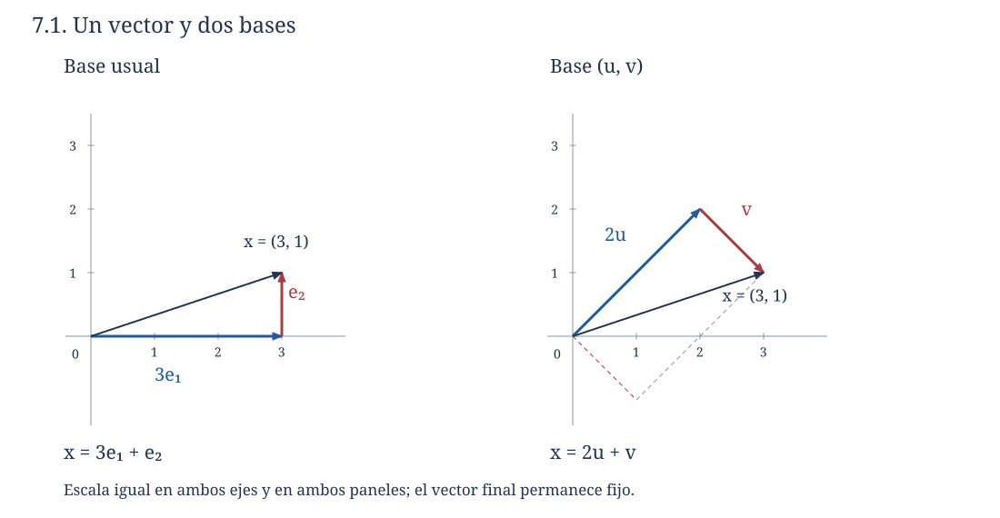
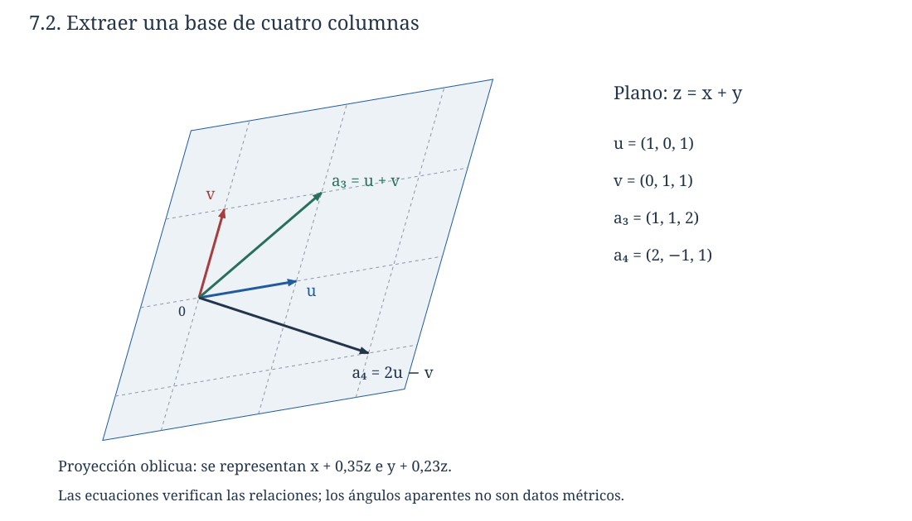
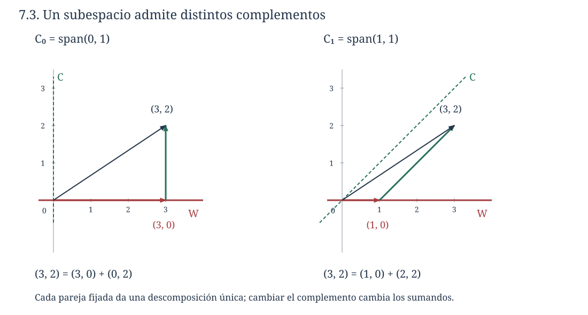

Capítulo 7. Bases y dimensión
Álgebra para matemáticos · Tomo II
← Capítulo 6 · Índice del tomo II · Obra completa · Capítulo 8 →
En el plano podemos llegar al punto \((3,1)\) avanzando tres unidades en la dirección \((1,0)\) y una en la dirección \((0,1)\). También podemos llegar mediante dos desplazamientos en la dirección \(u=(1,1)\) y uno en la dirección \(v=(1,-1)\), pues \(2u+v=(3,1)\). Los números que describen el desplazamiento dependen de las direcciones elegidas; el vector obtenido es el mismo. En ambos casos, además, cualquier punto del plano admite una descripción y los coeficientes quedan determinados por ese punto.
La situación cambia si añadimos una tercera dirección \(w=u+v\). Seguimos alcanzando todo el plano, pero las instrucciones dejan de ser únicas: podemos sustituir un desplazamiento en la dirección \(w\) por uno en la dirección \(u\) y otro en la dirección \(v\). En cambio, si conservamos únicamente \(u\), recuperamos la unicidad de los coeficientes a costa de perder todos los puntos que no están en su recta. Para describir un espacio con coeficientes únicos necesitamos reunir las dos propiedades estudiadas en C05 y C06: generar todos sus vectores y hacerlo con una familia independiente.

Trabajaremos sobre un cuerpo \(\mathbb F\) y con las nociones de combinación lineal, generación e independencia de los capítulos anteriores. Los ejemplos numéricos son reales salvo indicación contraria. La dimensión que construiremos corresponde siempre al cuerpo de escalares declarado.
7.1. Describir cada vector de una sola manera
Definición 7.1 (base). Una lista finita \(\mathcal B=(b_1,\ldots,b_n)\) de vectores de \(V\) es una base de \(V\) si genera \(V\) y es linealmente independiente. También hablaremos del conjunto que forman sus vectores; cuando escribamos coordenadas, fijaremos explícitamente su orden.
La generación asegura que, dado \(x\in V\), existen escalares \(a_1,\ldots,a_n\) con \(x=\sum_j a_jb_j\). La independencia asegura su unicidad: si otra lista de coeficientes \(c_j\) produce \(x\), al restar las representaciones obtenemos \(\sum_j(a_j-c_j)b_j=0\), y entonces \(a_j=c_j\) para cada \(j\). El recíproco también vale. Si cada vector tiene una representación única, existe una representación para todos ellos, por lo que la lista genera; al aplicar la unicidad al cero, cuya representación con todos los coeficientes nulos ya conocemos, obtenemos la independencia. Así, una base equivale a un sistema de representación finita con existencia y unicidad para cada vector del espacio.
La base usual de \(\mathbb F^n\) es \((e_1,\ldots,e_n)\): todo \(x=(x_1,\ldots,x_n)\) satisface \(x=x_1e_1+\cdots+x_ne_n\), y la comparación de las entradas prueba que esa expresión es única. El mismo argumento proporciona bases para objetos que no son flechas. En \(M_{m\times n}(\mathbb F)\), las matrices \(E_{ij}\) con un único \(1\) en la posición \((i,j)\) forman una base, porque \(A=\sum_{i,j}a_{ij}E_{ij}\). En el espacio de polinomios formales \(\mathbb F[t]_{\le d}\), que también escribiremos \(P_d(\mathbb F)\), la lista \((1,t,\ldots,t^d)\) es una base por la unicidad de los coeficientes del polinomio. Esta afirmación sigue siendo válida sobre cuerpos finitos: estamos comparando polinomios formales, sin identificarlos con las funciones que inducen.
El espacio \(\{0\}\) admite la lista vacía como base. Su única combinación lineal es la suma vacía, que vale cero, y no hay una relación con coeficientes no nulos. La lista \((0)\) genera ese espacio, pero es dependiente. Conservar la diferencia entre ambas listas nos permitirá tratar los casos de dimensión cero sin excepciones artificiales.
En la base \(\mathcal B=(u,v)\) de la apertura, la ecuación \(au+bv=(x,y)\) se traduce en \(a+b=x\), \(a-b=y\). Sobre \(\mathbb R\) tiene la solución única \(a=(x+y)/2\), \(b=(x-y)/2\), de modo que podemos llamar coordenadas de \((x,y)\) en \(\mathcal B\) a la columna formada por esos dos números. El orden importa: intercambiar \(u\) y \(v\) intercambia los coeficientes. No hay aquí una segunda clase de vectores geométricos; estamos registrando instrucciones para reconstruirlos. El estudio sistemático de estas correspondencias y de sus cambios ocupará C10 y C12.
Las dos propiedades de una base no pueden intercambiarse. Una lista independiente puede dejar fuera vectores del espacio y una lista generadora puede contener redundancias. Para relacionarlas necesitamos saber qué ocurre cuando introducimos una dirección nueva entre generadores ya disponibles.
7.2. Intercambiar sin perder el espacio generado
Supongamos que \(v=a_1g_1+\cdots+a_ng_n\) y que \(a_k\ne0\). Podemos despejar \(g_k\):
\[ g_k=a_k^{-1}v-\sum_{j\ne k}a_k^{-1}a_jg_j. \]
Al reemplazar \(g_k\) por \(v\), los generadores restantes siguen permitiendo recuperar \(g_k\) y, con él, todas las combinaciones anteriores. A la vez, el vector nuevo ya pertenecía al espacio generado original. Por ambas inclusiones, el espacio generado permanece igual. La condición \(a_k\ne0\) es la que permite la recuperación: en la base \((e_1,e_2)\), el vector \(v=e_2\) puede reemplazar a \(e_2\), pero reemplazar a \(e_1\) deja la lista \((e_2,e_2)\) y pierde una dirección.
Teorema 7.1 (intercambio finito). Sean \((g_1,\ldots,g_n)\) una lista generadora de \(V\) y \((u_1,\ldots,u_m)\) una lista independiente de vectores de \(V\). Entonces \(m\le n\) y es posible sustituir \(m\) de los generadores por \(u_1,\ldots,u_m\) de modo que la lista resultante siga generando \(V\).
Demostración. Introduciremos los \(u_j\) uno por uno y, en cada paso, retiraremos un generador original. Al principio la lista generadora contiene solamente los \(g_j\). Supongamos que hemos incorporado \(u_1,\ldots,u_{k-1}\) y que conservamos \(n-k+1\) de los generadores originales, que llamaremos \(h_1,\ldots,h_{n-k+1}\). Como esta lista mixta genera \(V\), tenemos una expresión
\[ u_k=\sum_{i=1}^{k-1}c_i u_i+\sum_{j=1}^{n-k+1}d_j h_j. \]
Algún \(d_j\) debe ser distinto de cero. Si todos fueran nulos, \(u_k\) sería combinación de sus predecesores, en contradicción con la independencia de \((u_1,\ldots,u_m)\). El despeje anterior permite reemplazar el correspondiente \(h_j\) por \(u_k\) y conservar la generación. La razón para retirar un generador original, en lugar de uno de los \(u_i\) ya introducidos, es precisamente mantener los avances de los pasos anteriores.
Si \(m>n\), después de introducir los primeros \(n\) vectores independientes habríamos obtenido una lista generadora \((u_1,\ldots,u_n)\). El siguiente vector \(u_{n+1}\) sería combinación de ellos, contradicción. Esto prueba \(m\le n\); como en cada uno de los \(m\) pasos se puede realizar el reemplazo, prueba también la segunda conclusión. Si \(n=0\), la generación dice \(V=\{0\}\) y ninguna lista independiente puede ser no vacía, de modo que la misma conclusión vale. \(\square\)
El intercambio permite comparar dos listas cuyas funciones son diferentes. No exige que los generadores iniciales sean independientes ni que los vectores que introducimos generen todo el espacio. En particular, una lista independiente de cinco vectores no puede vivir en un espacio generado por cuatro, aunque sus vectores sean matrices o funciones y no dispongamos de una imagen geométrica.
También aclara el alcance de la palabra «sustituir». En \(\mathbb R^3\), si partimos de \((e_1,e_2,e_3)\) e introducimos \(u_1=e_1+e_2\), podemos retirar \(e_1\). Si después introducimos \(u_2=e_2+e_3\), podemos retirar \(e_2\) y obtener \((u_1,u_2,e_3)\). Pero una elección posterior siempre debe examinarse en la lista que quedó después del intercambio previo: las expresiones respecto de la lista original no describen por sí solas todos los pasos de la construcción.
7.3. Extraer, completar y contar una base
Teorema 7.2 (extracción y extensión finitas). Si \(V\) admite una lista generadora finita, entonces:
- de cualquier lista generadora finita de \(V\) se puede extraer una base;
- toda lista independiente de \(V\) se puede completar hasta una base añadiendo vectores de una lista generadora finita prefijada.
Demostración. Para la primera afirmación, recorremos los generadores en su orden. Conservamos un vector cuando no pertenece al espacio generado por los que hemos conservado antes; en caso contrario, lo descartamos. La lista conservada es independiente: al añadir un vector que no pertenece al espacio generado anterior, cualquier relación con coeficiente nuevo no nulo permitiría despejarlo y contradecir esa elección; si el coeficiente nuevo es cero, la independencia anterior anula los restantes. Cada vector descartado era combinación de vectores conservados previamente y seguirá siéndolo al final. Por tanto, la lista final genera todos los generadores originales y con ellos \(V\).
Para la segunda afirmación, empezamos con la lista independiente dada y recorremos una lista generadora finita de \(V\). Añadimos cada generador que no esté en el espacio generado por los vectores reunidos hasta ese momento. El argumento anterior mantiene la independencia. Una vez terminada la lista generadora, todos sus vectores pertenecen al espacio generado final, por lo que éste es \(V\). El proceso termina porque sólo examinamos un número finito de candidatos. \(\square\)
Una lista independiente de \(V\) no puede ser infinita si \(V\) tiene \(n\) generadores: de ella podríamos tomar \(n+1\) vectores y contradecir el teorema de intercambio. Así, la afirmación de extensión anterior cubre también un conjunto independiente dado sin suponer inicialmente que es finito. La construcción requiere sólo un número finito de elecciones; no invoca un teorema de existencia de bases para espacios arbitrarios.
Teorema 7.3 (invariancia de la longitud). Si \(V\) admite una lista generadora finita, todas sus bases tienen la misma longitud finita.
Demostración. El teorema 7.2 proporciona al menos una base finita \(\mathcal B\) de longitud \(n\). Cualquier otra base es independiente, de modo que el argumento del párrafo anterior obliga a que sea finita; llamemos \(m\) a su longitud. Al comparar su independencia con la generación por \(\mathcal B\), el teorema 7.1 da \(m\le n\). Al comparar la independencia de \(\mathcal B\) con la generación por la otra base, obtenemos \(n\le m\). Las dos desigualdades dan \(m=n\). \(\square\)
Definición 7.2 (dimensión finita). Un espacio es de dimensión finita si admite una lista generadora finita. Su dimensión sobre \(\mathbb F\), denotada por \(\dim_{\mathbb F}V\) o \(\dim V\) cuando el cuerpo es inequívoco, es la longitud común de sus bases. Si no admite una lista generadora finita, decimos que es de dimensión infinita.
La definición se apoya en dos hechos distintos: existe una base y su longitud no depende de cómo la construimos. Por las bases de §7.1, obtenemos \(\dim\{0\}=0\), \(\dim\mathbb F^n=n\), \(\dim M_{m\times n}(\mathbb F)=mn\) y \(\dim P_d(\mathbb F)=d+1\). Recíprocamente, dimensión cero implica que la lista vacía genera todo el espacio, de modo que éste es \(\{0\}\).
Proposición 7.4 (criterios por tamaño). Si \(\dim V=n\), una lista independiente tiene a lo sumo \(n\) vectores y una lista generadora finita tiene al menos \(n\). Una lista de exactamente \(n\) vectores es base si es independiente o si genera \(V\).
Demostración. La primera cota se obtiene comparando con una base generadora de longitud \(n\); la segunda, comparando una base independiente con la lista generadora considerada. Si una lista independiente ya tiene \(n\) vectores, su extensión a una base no puede añadir ninguno, pues todas las bases tienen longitud \(n\). Si una lista generadora tiene \(n\) vectores, la extracción de una base no puede eliminar ninguno por la misma razón. \(\square\)
Podemos expresar esta relación mediante otras dos caracterizaciones. Una lista independiente es maximal por inclusión cuando no se le puede añadir ningún vector manteniendo la independencia; si no generara \(V\), podríamos añadir un vector exterior a su espacio generado, de modo que una lista independiente maximal es una base. Una lista generadora es minimal por inclusión cuando retirar cualquiera de sus vectores destruye la generación; si fuera dependiente, C06 permitiría despejar y retirar un vector redundante. También es, por tanto, una base. Estas palabras se refieren a la posibilidad de añadir o retirar vectores, y no a un orden de importancia de las direcciones.
7.4. Subespacios y elecciones del cuerpo
Teorema 7.5 (dimensión de un subespacio). Si \(W\subseteq V\) es un subespacio y \(\dim V=n<\infty\), entonces \(W\) tiene una base finita, \(\dim W\le n\) y toda base de \(W\) se extiende a una de \(V\). Además, \(\dim W=n\) si y sólo si \(W=V\).
Demostración. Todavía no sabemos que \(W\) tenga generadores finitos, por lo que no podemos aplicar directamente la extracción. Empezamos con la lista vacía y, mientras los vectores elegidos no generen \(W\), añadimos un vector de \(W\) exterior a su espacio generado. La lista permanece independiente. Este proceso debe detenerse a más tardar al reunir \(n\) vectores: en otro caso podríamos elegir \(n+1\) vectores independientes de \(V\). Al detenerse, la lista es una base de \(W\) y su longitud no supera \(n\). El teorema 7.2 permite extenderla a una base de \(V\). Si su longitud es \(n\), la extensión no añade vectores y la base de \(W\) ya genera \(V\), por lo que \(W=V\). El sentido contrario es inmediato. \(\square\)
La inclusión estricta de subespacios de un espacio finito implica, por tanto, una disminución estricta de dimensión. Sobre \(\mathbb R\), los subespacios de \(\mathbb R^3\) sólo pueden tener dimensión \(0,1,2\) o \(3\): el cero, las rectas por el origen, los planos por el origen y el espacio completo. La clasificación se deduce de las bases; un dibujo de un plano concreto no prueba la clasificación de todos ellos.
El cuerpo forma parte del dato. Cada complejo se escribe de manera única como \(a+bi\) con \(a,b\in\mathbb R\), de modo que \((1,i)\) es una base real de \(\mathbb C\). Sobre \(\mathbb C\), en cambio, \((1)\) ya es una base. Así, \(\dim_{\mathbb R}\mathbb C=2\) y \(\dim_{\mathbb C}\mathbb C=1\). Más generalmente, si \((v_1,\ldots,v_n)\) es una base compleja de un espacio \(V\), entonces
\[ (v_1,iv_1,\ldots,v_n,iv_n) \]
es una base real. Para probar la generación, escribimos cada coeficiente complejo como \(a_j+ib_j\) y distribuimos. Para probar la independencia real, una relación \(\sum_j(a_jv_j+b_jiv_j)=0\) se reagrupa como \(\sum_j(a_j+ib_j)v_j=0\); la independencia compleja anula cada número \(a_j+ib_j\) y, por ello, todos los \(a_j,b_j\). En consecuencia, \(\dim_{\mathbb R}V=2\dim_{\mathbb C}V\) cuando la dimensión compleja es finita.
La dimensión tampoco cuenta los elementos del espacio. La recta real tiene dimensión uno e infinitos elementos; \(\mathbb F_2^3\) tiene dimensión tres y ocho elementos. Si un cuerpo finito tiene \(q\) elementos y una base de \(V\) tiene longitud \(n\), cada una de las \(q^n\) listas de coeficientes produce un vector y la unicidad impide repeticiones, por lo que \(|V|=q^n\). Esta fórmula cuenta vectores una vez conocida una base; no identifica dimensión con cardinalidad.
7.5. Encontrar bases mediante eliminación
Para construir una base de un subespacio generado por vectores concretos podemos ejecutar la extracción de §7.3. Si los vectores están dados como columnas, la eliminación permite tomar las decisiones sin resolver desde el principio un sistema nuevo por cada candidato.
Proposición 7.6 (columnas originales de pivote). Sea \(A\) una matriz cuyas columnas generan \(W\subseteq\mathbb F^m\), y sea \(R\) su forma escalonada reducida. Las columnas de \(A\) que ocupan las posiciones de pivote de \(R\) forman una base de \(W\).
Demostración. Las operaciones de fila son reversibles y respetan todas las relaciones entre columnas: para cualquier columna de coeficientes \(c\), se tiene \(Ac=0\) si y sólo si \(Rc=0\). Esto puede verse aplicando cada operación al vector \(Ac\) o escribiendo \(R=EA\) con \(E\) invertible, como en C03.
Las columnas de pivote de \(R\) son independientes, pues tienen un \(1\) en su fila de pivote y ceros en las otras filas de pivote. Cada columna restante de \(R\) es combinación de ellas: sus entradas en las filas de pivote son los coeficientes y las filas sin pivote son cero. La equivalencia de relaciones transporta tanto la independencia como esas combinaciones a las columnas correspondientes de \(A\). Por tanto, las columnas originales seleccionadas son independientes y generan todas las columnas originales, es decir, generan \(W\). \(\square\)
La palabra «originales» evita una confusión concreta. Las operaciones de fila conservan relaciones entre las columnas, pero cambian en general los propios vectores y el subespacio que generan dentro de \(\mathbb F^m\). Por ejemplo, \((1,1)^{\mathsf T}\) se reduce a \((1,0)^{\mathsf T}\): ambas matrices tienen un pivote, pero sus columnas generan rectas distintas. El índice de columna permite escoger una base de la recta original; copiar la columna reducida produciría otra recta.
Consideremos
\[ A=\begin{pmatrix} 1&0&1&2\\0&1&1&-1\\1&1&2&1 \end{pmatrix} \sim R=\begin{pmatrix} 1&0&1&2\\0&1&1&-1\\0&0&0&0 \end{pmatrix}. \]
La tercera fila es la suma de las dos primeras, por lo que basta restarlas de ella. Las posiciones de pivote son \(1\) y \(2\): una base del espacio generado es \(u=(1,0,1)\), \(v=(0,1,1)\). Las otras columnas son \(u+v\) y \(2u-v\), respectivamente. Además, todos esos vectores satisfacen \(z=x+y\), y cada vector de ese plano es \(xu+yv\); hemos descrito el mismo subespacio por generadores y por una ecuación.

Cuando el subespacio viene dado por ecuaciones, la parametrización de C01 y C02 proporciona otro camino. El sistema \(x_1+x_2+x_3=0\), \(x_2+x_4=0\) permite elegir \(x_2=s\), \(x_3=t\) y escribir todas sus soluciones como
\[ (x_1,x_2,x_3,x_4)=s(-1,1,0,-1)+t(-1,0,1,0). \]
Estos vectores generan el espacio solución porque hemos descrito todas las soluciones. Son independientes porque la segunda y la tercera entrada de una combinación nula obligan a que sus coeficientes sean cero. Por tanto, constituyen una base y ese espacio tiene dimensión dos. El argumento se generaliza: los vectores asociados a los parámetros libres de una forma reducida tienen un \(1\) en su propia posición libre y ceros en las otras, lo que prueba su independencia. En un homogéneo con \(n\) incógnitas y \(r\) pivotes obtenemos así dimensión \(n-r\), incluso si no hay parámetros libres, cuando la base es vacía. La relación general entre dimensiones de una transformación y sus soluciones se establecerá en C09.
En un sistema no homogéneo consistente, las soluciones son \(p+W\), con \(W\) el espacio solución homogéneo. Si \(p\notin W\), ese conjunto no es un espacio vectorial con las operaciones heredadas y no tiene una base vectorial. Sus parámetros siguen describiendo direcciones pertenecientes a \(W\). Separar el punto de partida de las direcciones evita aplicar la definición de base a un conjunto que ni siquiera contiene el cero.
7.6. La dimensión de una suma
Si dos subespacios tienen dimensiones \(p\) y \(q\), reunir sus bases proporciona \(p+q\) generadores de su suma. Pero puede haber direcciones compartidas. La fórmula precisa se descubre tomando primero una base de la intersección, para que los dos espacios reconozcan sus coincidencias mediante los mismos vectores.
Teorema 7.7 (fórmula de Grassmann). Para subespacios \(U,W\) de dimensión finita de un mismo espacio,
\[ \dim(U+W)=\dim U+\dim W-\dim(U\cap W). \]
Demostración. La suma es de dimensión finita porque la unión de bases finitas de \(U\) y \(W\) la genera. La intersección, como subespacio de \(U\), también tiene una base finita \((z_1,\ldots,z_k)\). Extendámosla por separado hasta bases
\[ (z_1,\ldots,z_k,u_1,\ldots,u_a)\quad\text{de }U, \qquad (z_1,\ldots,z_k,w_1,\ldots,w_b)\quad\text{de }W. \]
La lista conjunta \((z_1,\ldots,z_k,u_1,\ldots,u_a,w_1,\ldots,w_b)\) genera \(U+W\): cualquier sumando de \(U\) y cualquier sumando de \(W\) se expresan con ella. Falta comprobar la independencia; contar los vectores antes de ese paso sería dar por resuelto el problema.
Supongamos que una combinación de la lista conjunta es cero. Al pasar el bloque de los \(w_j\) al otro lado, vemos que \(\sum_j\gamma_jw_j\) pertenece a \(U\) y, por su propia expresión, pertenece también a \(W\). Por tanto es combinación de los \(z_i\), digamos \(\sum_j\gamma_jw_j=\sum_i\delta_i z_i\). La independencia de la base de \(W\) obliga a que todos los \(\gamma_j\) y \(\delta_i\) sean cero. La relación inicial queda reducida a una combinación nula de los \(z_i\) y los \(u_i\), y la base de \(U\) anula sus coeficientes. Hemos probado la independencia conjunta.
La base construida tiene \(k+a+b\) vectores, mientras que \(\dim U=k+a\), \(\dim W=k+b\) y \(\dim(U\cap W)=k\). Sustituir estos números da la fórmula. El argumento admite bases vacías y por ello incluye intersecciones o subespacios nulos. \(\square\)
En \(\mathbb R^3\), tomemos \(U=\{(x,y,0)\}\) y \(W=\{(x,0,z)\}\). Ambos son planos de dimensión dos y comparten la recta generada por \(e_1\). Una base de la intersección es \((e_1)\); al añadir \(e_2\) obtenemos una base de \(U\) y al añadir \(e_3\) una base de \(W\). La lista conjunta \((e_1,e_2,e_3)\) es base de la suma, que tiene dimensión \(2+2-1=3\). Para obtener una base de la suma hemos contado una sola vez la dirección compartida.
La fórmula da además una información de existencia. Si \(U,W\subseteq V\) y \(\dim V=n\), entonces \(\dim(U+W)\le n\) y, por tanto, \(\dim(U\cap W)\ge\dim U+\dim W-n\). Dos subespacios de dimensiones \(4\) y \(3\) en un espacio de dimensión \(5\) deben compartir al menos dos direcciones independientes. Esta conclusión no requiere conocer sus ecuaciones.
7.7. Completar un subespacio sin repetir direcciones
Definición 7.3 (complemento algebraico). Un subespacio \(C\) es un complemento de \(W\) en \(V\) si \(V=W+C\) y \(W\cap C=\{0\}\).
Las dos condiciones tienen tareas diferentes. La suma dice que todo \(x\in V\) admite una descomposición \(x=w+c\); la intersección nula garantiza que esa descomposición es única. En efecto, de \(w+c=w'+c'\) se deduce \(w-w'=c'-c\in W\cap C\), y por ello ambos miembros son cero. Recíprocamente, si todas las descomposiciones son únicas y \(z\in W\cap C\), las expresiones \(z=z+0=0+z\) fuerzan \(z=0\).
Teorema 7.8 (existencia de complementos finitos). Todo subespacio \(W\) de un espacio \(V\) de dimensión finita tiene un complemento \(C\). Para cualquier complemento, \(\dim C=\dim V-\dim W\).
Demostración. Escribamos \(n=\dim V\). Tomemos una base \((w_1,\ldots,w_k)\) de \(W\) y extendámosla a una base \((w_1,\ldots,w_k,c_1,\ldots,c_{n-k})\) de \(V\). Definimos \(C=\operatorname{span}(c_1,\ldots,c_{n-k})\). La base completa muestra que \(W+C=V\). Si un vector pertenece a la intersección, una expresión suya mediante los \(w_i\) y otra mediante los \(c_j\) proporcionan, al restarlas, una relación en la base completa. Todos los coeficientes son cero, luego el vector es cero. La lista de los \(c_j\) es independiente y genera \(C\), por lo que \(\dim C=n-k\). Para un complemento cualquiera, Grassmann da la misma igualdad porque la dimensión de la intersección es cero. \(\square\)
El complemento depende de una elección. Para el eje horizontal \(W=\operatorname{span}(1,0)\) en \(\mathbb R^2\), cada recta \(C_a=\operatorname{span}(a,1)\) es un complemento. La descomposición correspondiente es
\[ (x,y)=(x-ay,0)+y(a,1). \]
Si cambiamos \(a\), cambian los sumandos aunque el vector \((x,y)\) permanezca fijo. Sólo para \(a=0\) aparece la descomposición según los ejes usuales; la definición algebraica no selecciona esa elección ni exige perpendicularidad. Para \(W=\{0\}\) el único complemento es \(V\), y para \(W=V\) el único es \(\{0\}\). Las sumas directas y sus aplicaciones se desarrollarán en C11 sobre esta misma unicidad.

7.8. Lo que cambia en dimensión infinita
En \(\mathbb F[t]\) la familia \((1,t,t^2,\ldots)\) es independiente: cada relación involucra sólo un número finito de potencias y la igualdad del polinomio a cero anula todos sus coeficientes. Genera porque cada polinomio tiene grado finito. Es, por tanto, una base algebraica infinita. Sin embargo, no existe una lista generadora finita: si una lista de polinomios no nulos tiene grados acotados por \(d\), todas sus combinaciones tienen grado a lo sumo \(d\) y no pueden producir \(t^{d+1}\); si la lista sólo contiene ceros, ni siquiera produce \(1\).
Para una familia infinita, llamamos base algebraica a una familia independiente que genera el espacio mediante combinaciones finitas. Así, la palabra «base» conserva aquí el requisito de que cada vector sea combinación finita de sus elementos. La expresión \(1+t+t^2+\cdots\) no es un polinomio ni una combinación lineal algebraica. En el espacio \(\mathbb F^{\mathbb N}\) de todas las sucesiones, los vectores \(e_j\) con un único \(1\) son independientes, pero sus combinaciones finitas sólo dan sucesiones de soporte finito. La sucesión constante \((1,1,\ldots)\) queda fuera, de modo que esa familia no es una base de todo \(\mathbb F^{\mathbb N}\); sí lo es del subespacio de soporte finito.
También falla una consecuencia finita que podría parecer puramente lógica. El subespacio \(t\mathbb F[t]\) está contenido estrictamente en \(\mathbb F[t]\), pues no contiene \(1\), y admite la base \((t,t^2,t^3,\ldots)\), de la misma cardinalidad numerable que la base anterior. La prueba de que una inclusión de igual dimensión implica igualdad usaba que una base finita no puede crecer conservando su longitud. Ese paso no se transporta al conteo de familias infinitas. No necesitamos aquí la existencia de bases de espacios arbitrarios ni un tratamiento de dimensiones cardinales; los ejemplos explícitos bastan para localizar el papel de la finitud en los resultados demostrados.
7.9. Ejercicios
Los ejercicios se ordenan desde el cálculo de bases hasta la construcción y transferencia de argumentos. En todos se pide justificar la respuesta; los espacios son reales salvo que se indique otro cuerpo.
Representar y calcular
1. En \(\mathbb R^2\), pruebe que \(\mathcal B=((1,2),(1,-1))\) es una base y calcule las coordenadas de \((4,5)\) y de un vector general \((x,y)\).
2. Pruebe que \((1,t-2,(t-2)^2)\) es una base de \(P_2(\mathbb R)\) y exprese \(3t^2-5t+7\) en ella.
3. Encuentre una base y la dimensión del espacio de matrices reales \(2\times2\) simétricas. Exprese una matriz general con la base obtenida.
4. Extraiga una base de la lista \((1,0,1),(0,1,1),(1,1,2),(2,-1,1)\) siguiendo el orden dado. Extraiga otra recorriendo la lista en orden inverso.
5. Encuentre una base del subespacio de \(\mathbb R^4\) dado por \(x_1+x_2+x_3=0\), \(x_2+x_4=0\). Extiéndala a una base de \(\mathbb R^4\).
6. Sean \(U=\{(x,y,z):x+y+z=0\}\) y \(W=\{(x,y,z):x-y=0\}\). Determine bases de \(U,W,U\cap W,U+W\) y verifique Grassmann.
7. Determine para qué valores reales de \(a\) la lista \((1,0,1),(0,1,1),(1,1,a)\) es una base de \(\mathbb R^3\). En el caso excepcional, dé una base de su espacio generado.
8. En \(\mathbb F_2^3\), examine la lista \((1,1,0),(0,1,1),(1,0,1)\). Obtenga una base de su espacio generado y enumere sus elementos. Compare con el mismo enunciado sobre \(\mathbb R\).
9. Halle una base real y una compleja de \(\mathbb C^2\). Explique por qué \((1,i)\), considerado como un solo vector de \(\mathbb C^2\), no constituye por sí solo una base compleja.
10. Sea \(W=\operatorname{span}((1,1,0),(0,1,1))\subseteq\mathbb R^3\). Encuentre un complemento generado por un vector usual \(e_j\) y otro generado por un vector que no sea ninguno de los \(e_j\).
Entender y reconstruir argumentos
11. Pruebe que toda base de \(\mathbb F^n\) tiene \(n\) vectores sin usar determinantes. Indique en qué momento interviene el teorema de intercambio.
12. Demuestre directamente que una lista es base si y sólo si cada vector admite una única representación como combinación de esa lista. Incluya el espacio nulo.
13. Pruebe las caracterizaciones de base como lista independiente maximal y como lista generadora minimal en un espacio de dimensión finita.
14. Si \(\dim V=n\), pruebe que toda cadena estricta \(W_0\subsetneq W_1\subsetneq\cdots\subsetneq W_r\) de subespacios tiene \(r\le n\). Construya una de longitud \(n\) en \(\mathbb F^n\).
15. Si \(U,W\subseteq V\) y \(\dim V=n\), demuestre las cotas \(\max(\dim U,\dim W)\le\dim(U+W)\le\min(n,\dim U+\dim W)\). Precise cuándo se alcanza la cota \(\dim U+\dim W\).
16. Pruebe que \(\dim(U\cap W)\ge\dim U+\dim W-n\) en un ambiente de dimensión \(n\). Construya subespacios de dimensiones \(3\) y \(4\) en \(\mathbb R^5\) que alcancen la igualdad.
17. En la prueba de Grassmann, explique por qué extender por separado una base de \(U\cap W\) evita dependencias en la lista conjunta. Escriba el argumento para el caso \(U\cap W=\{0\}\).
18. Sea \(\mathbb F_q\) un cuerpo de \(q\) elementos y \(V\) un espacio de dimensión \(n\). Pruebe que \(|V|=q^n\). ¿Cuántos vectores quedan fuera de un subespacio de dimensión \(k\)?
19. Sea \((b_1,\ldots,b_n)\) una base y \(v=\sum_i a_i b_i\). Pruebe que reemplazar \(b_k\) por \(v\) da una base si y sólo si \(a_k\ne0\).
20. Un estudiante reduce la columna \((2,2)^{\mathsf T}\) a \((1,0)^{\mathsf T}\) y concluye que \((1,0)\) es base del espacio generado por la columna original. Localice el error y formule la regla correcta.
Construir y distinguir
21. Dé una lista independiente que no genere \(\mathbb R^3\) y una lista generadora que no sea independiente. Explique por qué comprobar sólo una de las dos propiedades exige conocer también el tamaño adecuado.
22. Construya tres rectas distintas de \(\mathbb R^2\) cuya intersección por parejas sea \(\{0\}\), pero cuya suma tenga dimensión dos. Explique por qué Grassmann no da una fórmula de inclusión–exclusión de tres subespacios por simple imitación de los conjuntos.
23. Encuentre un subespacio propio de \(\mathbb R[t]\) con una base numerable y compare su base con la de \(\mathbb R[t]\). Identifique la hipótesis que falta para deducir igualdad de subespacios.
24. Explique por qué las sucesiones usuales \(e_j\) no generan \(\mathbb R^{\mathbb N}\). Identifique exactamente el subespacio que sí generan.
25. Para \(W=\operatorname{span}(1,0)\), describa todos los complementos de \(W\) en \(\mathbb R^2\) y determine la descomposición de \((x,y)\) asociada a cada uno.
26. En \(\mathbb R^4\), sean \(U=\operatorname{span}(e_1,e_2,e_3)\) y \(W=\operatorname{span}(e_2,e_3,e_4)\). Construya bases adaptadas a su intersección y una base de la suma sin duplicar vectores comunes.
27. En \(\mathbb R^4\), fije \(U=\operatorname{span}(e_1,e_2)\). Para cada \(k\in\{0,1,2\}\) construya un subespacio \(W\) de dimensión dos con \(\dim(U\cap W)=k\). Calcule la dimensión de la suma.
28. En \(P_3(\mathbb R)\), encuentre una base de \(W=\{p:p(0)=p(1)=0\}\) y un complemento de \(W\). Muestre directamente la descomposición de un polinomio general.
29. Sea \(\mathcal T\) el espacio de matrices \(3\times3\) triangulares superiores y \(\mathcal D\) el de matrices diagonales. Determine sus dimensiones y un complemento de \(\mathcal D\) en \(\mathcal T\).
30. Sobre \(\mathbb F_2\), compare el espacio de polinomios formales \(P_2(\mathbb F_2)\) con el espacio de todas las funciones \(\mathbb F_2\to\mathbb F_2\). Dé sus dimensiones y explique qué ocurre con \(t^2+t\) al pasar de polinomio a función.
Integrar y transferir
31. Si \(\mathcal B\) y \(\mathcal C\) son bases de un espacio finito y \(b\in\mathcal B\setminus\mathcal C\), pruebe que existe \(c\in\mathcal C\setminus\mathcal B\) para el cual \((\mathcal B\setminus\{b\})\cup\{c\}\) es base.
32. Sean \(W\subseteq V\) y \(\dim V=n\). Suponga que \(W\) tiene dimensión \(n-1\). Pruebe que todo vector \(v\notin W\) genera un complemento de \(W\). Clasifique los subespacios situados entre \(W\) y \(V\).
33. Sean \(U,W\subseteq V\) subespacios de un espacio finito. Pruebe que existen subespacios \(A,B\) tales que \(U=(U\cap W)+A\), \(W=(U\cap W)+B\) y todo vector de \(U+W\) se escribe de manera única como \(z+a+b\), con \(z\in U\cap W\), \(a\in A\), \(b\in B\).
34. Sea \(V\) de dimensión \(n\) sobre \(\mathbb F_q\). Cuente sus bases ordenadas, eligiendo los vectores sucesivamente. Incluya \(n=0\) y calcule el número para \(\mathbb F_2^3\).
35. ¿Para qué cuerpos \(\mathbb F\) la lista \((1,t+1,(t+1)^2)\) es base de \(P_2(\mathbb F)\)? Compare con \((1,t^2+1,t^2-1)\), tratando explícitamente la característica dos.
36. Sean \(a_0,\ldots,a_d\) escalares distintos de \(\mathbb F\). Para \(0\le j\le d\), defina \(L_j(t)=\prod_{k\ne j}(t-a_k)/(a_j-a_k)\). Pruebe que \((L_0,\ldots,L_d)\) es base de \(P_d(\mathbb F)\) y obtenga los coeficientes de un polinomio en esa base sin usar determinantes.
37. Sea \(S\) el espacio de sucesiones reales \((x_j)_{j\ge0}\) con \(x_{j+2}=x_{j+1}+2x_j\). Construya una base a partir de los datos iniciales \((x_0,x_1)\), pruebe su dimensión y exprese en ella la sucesión de datos iniciales \((3,-1)\).
38. En \(\mathbb R^5\), sean \(U=\{x:x_1+x_2+x_3=0\}\) y \(W=\{x:x_3+x_4+x_5=0\}\). Determine bases y dimensiones de \(U\cap W\) y \(U+W\); compruebe que los dos subespacios originales tienen dimensión cuatro.
39. Sean \(U\subseteq V\), ambos de dimensión finita, y \(C\) un complemento de \(U\). Para un subespacio \(W\) que contiene a \(U\), demuestre que \(W=U+(W\cap C)\) y que la descomposición es única. Deduzca una identidad de dimensiones.
40. Un argumento afirma: «Sean bases independientes de \(U\) y de \(W\). Su unión genera \(U+W\); como cada base es independiente, la unión también lo es y \(\dim(U+W)=\dim U+\dim W\)». Dé un contraejemplo con bases disjuntas como conjuntos y repare el argumento indicando la hipótesis exacta que permite mantener su conclusión.
7.10. Soluciones razonadas
1. Escribir \(a(1,2)+b(1,-1)=(x,y)\) conduce a \(a+b=x\), \(2a-b=y\). Sumando las ecuaciones obtenemos \(3a=x+y\) y después \(3b=2x-y\). Así, para cualquier \((x,y)\) existe exactamente una representación, con \(a=(x+y)/3\), \(b=(2x-y)/3\), lo que prueba que la lista es base. Para \((4,5)\) los coeficientes son \((3,1)\); la comprobación \(3(1,2)+(1,-1)=(4,5)\) verifica el cálculo y el orden de las coordenadas.
2. Al desarrollar \(a+b(t-2)+c(t-2)^2\) obtenemos \(ct^2+(b-4c)t+(a-2b+4c)\). Si ese polinomio es cero, el coeficiente de \(t^2\) da \(c=0\), el de \(t\) da \(b=0\) y el constante da \(a=0\). La lista es independiente y tiene tres vectores en un espacio de dimensión tres, luego es base. Para el polinomio pedido, \(c=3\), \(b-12=-5\) da \(b=7\) y \(a-14+12=7\) da \(a=9\). La representación es \(9+7(t-2)+3(t-2)^2\).
3. Toda matriz simétrica tiene la forma \(\begin{pmatrix}a&b\\b&c\end{pmatrix}\) y se expresa como \(aE_{11}+b(E_{12}+E_{21})+cE_{22}\). Los tres coeficientes son únicos al examinar las entradas \((1,1),(1,2),(2,2)\); por ello, \((E_{11},E_{12}+E_{21},E_{22})\) es base y la dimensión es tres. Las cuatro entradas de la matriz no son cuatro parámetros independientes, porque las dos situadas fuera de la diagonal deben coincidir.
4. Llamemos \(u,v,w,z\) a los vectores en el orden dado. Los dos primeros son independientes por sus entradas primera y segunda; \(w=u+v\) y \(z=2u-v\), de modo que el recorrido directo conserva \((u,v)\). En orden inverso empezamos por \(z,w\). De \(az+bw=0\) obtenemos \(2a+b=0\) y \(-a+b=0\), luego \(3a=0\) y \(a=b=0\). Son independientes y, puesto que \(u=(z+w)/3\), \(v=(2w-z)/3\), generan también a los otros dos. El recorrido inverso conserva \((z,w)\). Los resultados pueden variar con el orden, pero ambas bases tienen longitud dos.
5. Con \(x_2=s\), \(x_3=t\), las ecuaciones dan \(x_1=-s-t\), \(x_4=-s\). La parametrización proporciona la base \(b_1=(-1,1,0,-1)\), \(b_2=(-1,0,1,0)\): genera todas las soluciones y sus entradas segunda y tercera prueban la independencia. Para extenderla probamos con \(e_1,e_4\). Una relación \(ab_1+bb_2+ce_1+de_4=0\) da \(a=0\) en la segunda entrada, \(b=0\) en la tercera y después \(c=d=0\). Los cuatro vectores son independientes en \(\mathbb R^4\), luego forman la base buscada.
6. En \(U\) podemos escribir \((x,y,z)=x(1,0,-1)+y(0,1,-1)\), y las primeras dos entradas prueban que estos generadores son independientes. En \(W\), la ecuación da \((x,y,z)=x(1,1,0)+z(0,0,1)\), también de manera única. Para pertenecer a ambos se requiere \(y=x\), \(z=-2x\), por lo que \(U\cap W=\operatorname{span}(1,1,-2)\) tiene dimensión uno. Grassmann da dimensión tres para la suma, que entonces es \(\mathbb R^3\) y tiene base usual. Se verifica \(3=2+2-1\).
7. En una relación con coeficientes \(r,s,t\), las dos primeras entradas dan \(r=s=-t\). La tercera queda \((a-2)t=0\). Si \(a\ne2\), todos los coeficientes se anulan: hay tres vectores independientes en dimensión tres, luego una base. Si \(a=2\), el tercer vector es suma de los dos primeros, que siguen siendo independientes; estos dos forman una base del espacio generado. El análisis conserva el caso excepcional en lugar de dividir por \(a-2\) antes de decidir si es cero.
8. En \(\mathbb F_2\), el tercer vector es suma de los dos primeros. Éstos son independientes porque la primera entrada de una relación anula el primer coeficiente y la tercera anula el segundo. Su espacio generado consta de \(000,110,011,101\) y tiene dimensión dos. Sobre \(\mathbb R\), una relación con coeficientes \(a,b,c\) produce \(a+c=0\), \(a+b=0\), \(b+c=0\). Las dos primeras dan \(b=c=-a\) y la tercera da \(-2a=0\), luego todos son cero. La misma lista es entonces base de \(\mathbb R^3\). La diferencia está en que \(2=0\) en \(\mathbb F_2\).
9. Una base compleja es \(((1,0),(0,1))\). Una base real es \(((1,0),(i,0),(0,1),(0,i))\): los coeficientes reales reconstruyen por separado las partes real e imaginaria de las dos entradas, y esa reconstrucción es única. Las dimensiones son dos y cuatro, respectivamente. El único vector \((1,i)\) sólo genera sobre \(\mathbb C\) los pares \((z,iz)\); por ejemplo, \((0,1)\) no tiene esa forma, pues la primera entrada obligaría a \(z=0\). El número de entradas de un vector no es el número de vectores de la lista.
10. Los vectores de \(W\) son \((a,a+b,b)\) y satisfacen \(y=x+z\). El vector \(e_2\) no satisface esa ecuación y, como \(W\) tiene dimensión dos, añadirlo a su base produce una base de \(\mathbb R^3\). Por tanto, \(\operatorname{span}(e_2)\) es complemento. Otro vector exterior es \((1,0,1)\), porque \(0\ne1+1\). Para cualquiera de esos vectores \(c\), la igualdad \(tc\in W\) obliga a \(t=0\), y la lista de dos generadores de \(W\) junto con \(c\) genera el ambiente por independencia y tamaño. Esto comprueba las dos condiciones de complemento.
11. La base usual \(E=(e_1,\ldots,e_n)\) tiene \(n\) vectores, porque la igualdad de entradas da existencia y unicidad de representación. Sea \(B\) otra base. El intercambio, comparando la independencia de \(B\) con la generación por \(E\), impide que \(B\) tenga más de \(n\) vectores; una base infinita también queda excluida tomando \(n+1\) de sus elementos. Si \(B\) tiene \(m\) vectores, la comparación inversa entre \(E\) independiente y \(B\) generadora da \(n\le m\). Por tanto \(m=n\). Las dos comparaciones son el uso decisivo del intercambio.
12. Si la lista es base, la generación da existencia para cada vector. Dos representaciones de un mismo vector, al restarse, dan una relación nula; la independencia obliga a que sus coeficientes coincidan. Recíprocamente, la existencia para cada vector implica generación. La unicidad aplicada al cero compara cualquier relación nula con la relación cuyos coeficientes son todos cero, y prueba independencia. Para \(\{0\}\) la lista vacía da una única representación, la suma vacía; la lista \((0)\) no la da, porque cualquier coeficiente produce cero.
13. Si una lista independiente maximal no generara \(V\), habría un vector exterior a su espacio generado y podríamos añadirlo conservando la independencia, contradicción. Así, es base. Si una lista generadora minimal fuera dependiente, una relación no trivial permitiría despejar un vector con coeficiente no nulo, retirarlo y mantener la generación, otra contradicción. Recíprocamente, a una base no puede añadirse un vector preservando independencia, pues todos los vectores ya son combinaciones de ella; tampoco puede retirarse un vector manteniendo generación, pues ese vector quedaría expresado por los restantes y produciría dependencia.
14. Cada inclusión estricta aumenta la dimensión al menos en uno, por el teorema 7.5. Por ello \(\dim W_r\ge\dim W_0+r\ge r\), mientras que \(\dim W_r\le n\), y resulta \(r\le n\). La cadena \(\{0\}\subsetneq\operatorname{span}(e_1)\subsetneq\cdots\subsetneq\operatorname{span}(e_1,\ldots,e_n)\) alcanza \(n\) inclusiones estrictas. Cuando \(n=0\), queda sólo \(\{0\}\) y la cota sigue siendo exacta.
15. Las inclusiones \(U,W\subseteq U+W\) dan la cota inferior. La inclusión \(U+W\subseteq V\) da la cota \(n\), y reunir bases de \(U\) y \(W\) da una lista generadora de longitud \(\dim U+\dim W\), por lo que la dimensión de la suma no supera ese número. Grassmann muestra que \(\dim(U+W)=\dim U+\dim W\) equivale a \(\dim(U\cap W)=0\), es decir, a \(U\cap W=\{0\}\). Esta condición puede cumplirse sólo si la suma de dimensiones no supera \(n\).
16. Al despejar en Grassmann y usar \(\dim(U+W)\le n\) obtenemos \(\dim(U\cap W)=\dim U+\dim W-\dim(U+W)\ge\dim U+\dim W-n\). Para alcanzar la cota en \(\mathbb R^5\), tomamos \(U=\operatorname{span}(e_1,e_2,e_3)\) y \(W=\operatorname{span}(e_2,e_3,e_4,e_5)\). Su suma contiene los cinco vectores usuales y su intersección es \(\operatorname{span}(e_2,e_3)\), de dimensión \(2=3+4-5\).
17. Los vectores comunes se incluyen una única vez en la lista conjunta; pero eso por sí solo no prueba independencia. La extensión permite que cualquier relación entre los bloques nuevos produzca un vector de la intersección, que ya está generado por el bloque común. La independencia de cada base extendida elimina entonces los coeficientes de los bloques nuevos. Si \(U\cap W=\{0\}\) y una relación es \(\sum a_iu_i+\sum b_jw_j=0\), el vector \(\sum a_iu_i=-\sum b_jw_j\) pertenece a la intersección y es cero. La independencia en cada espacio anula separadamente los dos grupos de coeficientes. Así, la concatenación de sus bases es base de la suma.
18. Fijada una base \((b_1,\ldots,b_n)\), cada elección de \(n\) coeficientes de \(\mathbb F_q\) produce un vector \(\sum a_ib_i\). Hay \(q^n\) elecciones. La generación asegura que no falta ningún vector y la independencia asegura que no contamos dos veces el mismo. Por el mismo razonamiento un subespacio de dimensión \(k\) tiene \(q^k\) elementos, de modo que fuera de él quedan \(q^n-q^k\). Para \(n=0\), \(q^0=1\) cuenta correctamente el único vector cero.
19. Si \(a_k\ne0\), el despeje de §7.2 muestra que la lista reemplazada sigue generando. Como tiene \(n=\dim V\) vectores, es base. Si \(a_k=0\), el vector \(v\) pertenece al espacio generado por los \(b_i\) con \(i\ne k\), así que toda la lista reemplazada queda en ese subespacio. Este no contiene a \(b_k\), por la independencia de la base original, y por tanto no puede generar \(V\). Esto prueba también la necesidad de la condición.
20. La columna original genera la recta \(y=x\); \((1,0)\) no pertenece a ella y no puede ser su base. Las operaciones de fila preservan las relaciones entre columnas, pero no preservan el espacio de columnas como subconjunto fijo del ambiente. La regla correcta es buscar las posiciones de pivote en la matriz reducida y tomar las columnas de la matriz original en esas posiciones. Aquí hay una sola posición, por lo que la base puede ser \(((2,2))\). La reducción permite decidir independencia y generación, sin autorizar a sustituir la recta original por su imagen.
21. La lista \((e_1,e_2)\) es independiente en \(\mathbb R^3\), pero no produce \(e_3\). La lista \((e_1,e_2,e_3,e_1+e_2)\) genera \(\mathbb R^3\), pero es dependiente porque el cuarto vector es suma de los dos primeros. Si la lista tiene exactamente tres vectores, una de las propiedades sí basta por la proposición 7.4. Sin la condición de tamaño, la independencia sólo garantiza ausencia de redundancia y la generación sólo garantiza cobertura del espacio.
22. Tomemos \(L_1=\operatorname{span}(1,0)\), \(L_2=\operatorname{span}(0,1)\) y \(L_3=\operatorname{span}(1,1)\). Dos cualesquiera son rectas distintas y su intersección es cero; su suma conjunta es \(\mathbb R^2\). La fórmula ingenua sumaría tres dimensiones y restaría intersecciones de dimensión cero, dando tres en lugar de dos. Al aplicar Grassmann sucesivamente aparece \((L_1+L_2)\cap L_3=L_3\), que tiene dimensión uno, aunque \((L_1\cap L_3)+(L_2\cap L_3)=\{0\}\). Esa falta de distributividad identifica el paso que la imitación de conjuntos no puede justificar.
23. El subespacio \(W=t\mathbb R[t]\) consta de los polinomios con término constante cero. La lista \((t,t^2,t^3,\ldots)\) es una base, por la unicidad de coeficientes y la finitud de cada polinomio, mientras que \(\mathbb R[t]\) tiene base \((1,t,t^2,\ldots)\). Ambas se enumeran por los naturales, pero \(1\notin W\). La finitud falta en el criterio de igualdad de dimensiones bajo inclusión; una familia numerable puede recibir un elemento adicional y seguir siendo numerable.
24. Una combinación finita de los \(e_j\) sólo puede tener entradas no nulas entre los índices de los vectores usados, por lo que tiene soporte finito. Recíprocamente, si una sucesión tiene soporte finito \(J\), se escribe exactamente como \(\sum_{j\in J}x_je_j\). El espacio generado es, por tanto, el de todas las sucesiones de soporte finito. La sucesión constante uno no pertenece a él, así que la familia no genera el espacio de todas las sucesiones. Escribir una suma infinita de \(e_j\) cambiaría la operación algebraica admitida en la definición.
25. Todo complemento tiene dimensión uno. Si \(C=\operatorname{span}(a,b)\) y \(b=0\), entonces \(C\subseteq W\), lo que contradice la intersección nula para una recta no nula. Por ello \(b\ne0\) y podemos normalizar el generador a \((a/b,1)\). Así, todos los complementos son \(C_c=\operatorname{span}(c,1)\), con \(c\in\mathbb R\). La descomposición es \((x,y)=(x-cy,0)+y(c,1)\). La segunda entrada fija de manera única el coeficiente \(y\), y la primera fija el sumando de \(W\); además, cada \(C_c\) tiene intersección cero con \(W\). Esto acredita existencia, exhaustividad y unicidad.
26. La intersección es \(\operatorname{span}(e_2,e_3)\): pertenecer a \(U\) anula la cuarta entrada y pertenecer a \(W\) anula la primera. Desde la base común \((e_2,e_3)\), añadimos \(e_1\) para obtener una base de \(U\) y \(e_4\) para obtener una de \(W\). La lista conjunta \((e_2,e_3,e_1,e_4)\) es una permutación de la base usual, luego es base de la suma, que es \(\mathbb R^4\). Grassmann da \(4=3+3-2\).
27. Para \(k=0\), elegimos \(W=\operatorname{span}(e_3,e_4)\); las coordenadas separadas dan intersección cero y suma de dimensión cuatro. Para \(k=1\), tomamos \(W=\operatorname{span}(e_2,e_3)\): la intersección es \(\operatorname{span}(e_2)\) y la suma tiene base \((e_1,e_2,e_3)\), dimensión tres. Para \(k=2\), elegimos \(W=U\) y ambas operaciones dan dimensión dos. En los tres casos se verifica \(\dim(U+W)=4-k\).
28. Para \(p=a+bt+ct^2+dt^3\), las condiciones son \(a=0\) y \(b+c+d=0\). Por tanto \(p=c(t^2-t)+d(t^3-t)\); esos dos polinomios son independientes al comparar los coeficientes de grados dos y tres. Una base de \(W\) es \((t^2-t,t^3-t)\). Podemos tomar como complemento \(C=\operatorname{span}(1,t)\). Para un polinomio general, la identidad
\[ p=c(t^2-t)+d(t^3-t)+a+(b+c+d)t \]
muestra la descomposición. Un polinomio lineal que se anula en \(0\) y \(1\) es cero, así que \(W\cap C=\{0\}\) y la descomposición es única.
29. En \(\mathcal T\) las posiciones posibles son \((1,1),(1,2),(1,3),(2,2),(2,3),(3,3)\); las seis matrices \(E_{ij}\) correspondientes forman una base por comparación de entradas. Las tres posiciones diagonales forman una base de \(\mathcal D\), de dimensión tres. El espacio \(C=\operatorname{span}(E_{12},E_{13},E_{23})\) es un complemento: cualquier triangular superior se separa de manera única en su parte diagonal y su parte estrictamente superior. La separación de posiciones prueba tanto la suma completa como la intersección nula.
30. Los polinomios formales tienen base \((1,t,t^2)\) y dimensión tres. Una función en un conjunto de dos elementos queda determinada por sus valores en \(0,1\); las funciones \(\delta_0,\delta_1\) que valen uno en su índice y cero en el otro forman una base, por lo que el espacio de funciones tiene dimensión dos. El polinomio \(t^2+t\) es formalmente no nulo, pero vale cero tanto en \(0\) como en \(1\) en \(\mathbb F_2\). Así, pasar de polinomios a funciones puede identificar objetos distintos, y no conserva automáticamente la independencia de las potencias formales.
31. Escribamos cada vector de \(\mathcal C\) en la base \(\mathcal B\) y fijemos la posición correspondiente a \(b\). Si todos tuvieran coeficiente cero en esa posición, toda combinación de \(\mathcal C\) pertenecería a \(\operatorname{span}(\mathcal B\setminus\{b\})\). Como \(\mathcal C\) genera, también \(b\) pertenecería a ese espacio, contradiciendo la independencia de \(\mathcal B\). Existe, por tanto, \(c\in\mathcal C\) con coeficiente de \(b\) no nulo. Ese vector no puede pertenecer a \(\mathcal B\setminus\{b\}\), cuyos coeficientes en dicha posición son cero, ni puede ser \(b\), porque \(b\notin\mathcal C\). Luego \(c\in\mathcal C\setminus\mathcal B\), y el ejercicio 19 prueba que el reemplazo da una base.
32. Añadir \(v\notin W\) a una base de \(W\) conserva la independencia y produce \(n\) vectores, luego una base de \(V\). En consecuencia, \(V=W+\operatorname{span}(v)\). Si \(av\in W\) y \(a\ne0\), entonces \(v=a^{-1}(av)\in W\), contradicción; la intersección es cero. Si \(X\) es un subespacio con \(W\subseteq X\subseteq V\), o bien \(X=W\), o bien contiene un vector exterior a \(W\) y el argumento anterior da \(X=V\). No hay subespacios intermedios propios.
33. Tome una base \(Z\) de \(U\cap W\) y extiéndala a bases \(Z\cup A_0\) de \(U\) y \(Z\cup B_0\) de \(W\). Defina \(A=\operatorname{span}(A_0)\) y \(B=\operatorname{span}(B_0)\). La prueba de Grassmann muestra que la lista formada por \(Z,A_0,B_0\) es base de \(U+W\). Agrupando las coordenadas según esos tres bloques obtenemos la existencia de \(z+a+b\). Si hubiera dos descomposiciones, al restarlas y expresar cada diferencia en su bloque se obtendría una relación en la base conjunta. La independencia anula todas las coordenadas, por lo que coinciden los tres sumandos. El argumento incluye cualquier bloque vacío.
34. Para el primer vector hay \(q^n-1\) elecciones, pues debe ser no nulo. Tras elegir \(k\) vectores independientes, su espacio generado tiene \(q^k\) elementos por el ejercicio 18. El siguiente debe estar fuera de él, lo que da \(q^n-q^k\) elecciones y garantiza que la lista crezca conservando independencia. Al llegar a \(n\) vectores, la proposición 7.4 asegura que es base. El número total de bases ordenadas es
\[ \prod_{k=0}^{n-1}(q^n-q^k). \]
Para \(n=0\), el producto vacío vale uno y cuenta la única base vacía. En \(\mathbb F_2^3\) obtenemos \((8-1)(8-2)(8-4)=168\). El orden es parte del conteo: distintas permutaciones de una misma base aparecen como listas diferentes.
35. En una relación \(a+b(t+1)+c(t+1)^2=0\), el coeficiente de \(t^2\) da \(c=0\), después el de \(t\) da \(b=0\) y finalmente \(a=0\). Esto funciona en cualquier característica, pues los coeficientes principales de los tres polinomios son uno y sus grados son distintos. La lista es base en todos los cuerpos. En la segunda lista, todos los polinomios tienen coeficiente de \(t\) igual a cero, por lo que nunca generan \(P_2(\mathbb F)\). Si la característica es distinta de dos, \(1\) y \(t^2+1\) son independientes y generan el mismo espacio que la terna, pues \(t^2-1=(t^2+1)-2\). En característica dos, los dos últimos polinomios coinciden; \(1,t^2+1\) siguen siendo independientes. En ambos casos el espacio generado tiene dimensión dos, aunque la relación concreta entre los generadores cambia.
36. Cada denominador es no nulo porque los nodos son distintos. Al evaluar, \(L_j(a_i)=0\) si \(i\ne j\), mientras que \(L_j(a_j)=1\). Una relación \(\sum_j c_jL_j=0\) evaluada en \(a_i\) da \(c_i=0\) para cada \(i\), de modo que la lista es independiente. Contiene \(d+1\) polinomios en un espacio de dimensión \(d+1\), luego es base. Si \(p=\sum_j c_jL_j\), la evaluación vuelve a dar \(c_i=p(a_i)\) y obtenemos \(p(t)=\sum_j p(a_j)L_j(t)\). No se requiere un teorema de raíces para esta prueba, sólo independencia y tamaño; sí se requiere que el cuerpo contenga los \(d+1\) nodos distintos.
37. La recurrencia determina sucesivamente cada entrada a partir de las dos anteriores. Definamos \(u\) mediante datos iniciales \((1,0)\) y \(v\) mediante \((0,1)\). Sus primeras entradas son \(u=(1,0,2,2,6,10,\ldots)\) y \(v=(0,1,1,3,5,11,\ldots)\). Las combinaciones lineales satisfacen la misma recurrencia, de modo que el conjunto de soluciones es un subespacio. Si una solución tiene datos iniciales \((a,b)\), la diferencia con \(au+bv\) tiene dos entradas iniciales cero; la recurrencia prueba por inducción que todas sus entradas son cero. Así, \(u,v\) generan. Una relación entre ellos se anula ya al examinar las dos entradas iniciales, por lo que son independientes y la dimensión es dos. Para \((3,-1)\) la sucesión es \(3u-v=(3,-1,5,3,13,19,\ldots)\), y sus primeras entradas verifican el patrón.
38. En \(U\) se tiene \(x_1=-x_2-x_3\) y las otras cuatro entradas son libres; una base es \((-1,1,0,0,0),(-1,0,1,0,0),e_4,e_5\). En \(W\), podemos despejar \(x_3=-x_4-x_5\); una base es \(e_1,e_2,(0,0,-1,1,0),(0,0,-1,0,1)\). La lectura de los cuatro parámetros en cada caso prueba independencia además de generación, así que ambos tienen dimensión cuatro. En la intersección, con \(x_2=s\), \(x_4=t\), \(x_5=r\), obtenemos
\[ x=(-s+t+r,s,-t-r,t,r) =s(-1,1,0,0,0)+t(1,0,-1,1,0)+r(1,0,-1,0,1). \]
Las entradas segunda, cuarta y quinta prueban que estos tres vectores son independientes. La intersección tiene dimensión tres y Grassmann da \(\dim(U+W)=4+4-3=5\). Por tanto la suma es \(\mathbb R^5\) y admite la base usual.
39. Tome \(w\in W\) y su descomposición única \(w=u+c\) respecto de \(V=U+C\). Como \(u\in U\subseteq W\), se tiene \(c=w-u\in W\); además \(c\in C\), luego \(w\in U+(W\cap C)\). La inclusión contraria se sigue de que ambos sumandos están en \(W\). La intersección \(U\cap(W\cap C)\) es cero, porque está contenida en \(U\cap C\). Por tanto la descomposición es única y Grassmann da \(\dim W=\dim U+\dim(W\cap C)\). La inclusión \(U\subseteq W\) se usó al asegurar que \(w-u\) permanecía en \(W\).
40. Tome \(U=\operatorname{span}(e_1,e_2)\) y \(W=\operatorname{span}(e_1+e_2,e_3)\) en \(\mathbb R^3\). Las bases indicadas son disjuntas como conjuntos, pero sus cuatro vectores satisfacen \((e_1+e_2)-e_1-e_2=0\). La independencia separada no impide relaciones que mezclan ambos grupos. Se tiene \(U\cap W=\operatorname{span}(e_1+e_2)\) y la dimensión de la suma es \(2+2-1=3\). La hipótesis exacta para la conclusión aditiva es \(U\cap W=\{0\}\). Bajo ella, una relación entre ambos bloques da un vector perteneciente a la intersección, que debe ser cero; después la independencia de cada base anula sus propios coeficientes. Que las bases sean disjuntas sólo evita repetir elementos literalmente, sin eliminar las dependencias entre ellos.
Lecturas y referencias
El intercambio y sus consecuencias para bases y dimensión pueden contrastarse con Friedberg, Insel y Spence, Linear Algebra, 5.ª edición, §1.6, y con Hoffman y Kunze, Linear Algebra, 2.ª edición, §2.3. Nathaniel Johnston, Advanced Linear and Matrix Algebra (2021), §§1.1.3 y 1.2.1, ofrece ejemplos de bases de matrices y polinomios y el paso a las coordenadas. Axler, Linear Algebra Done Right, 4.ª edición, §§2B–2C, desarrolla extracción, extensión y dimensión de una suma. Las formulaciones clásicas se presentan aquí con demostraciones propias adaptadas a los prerrequisitos del tomo; los ejercicios y sus soluciones se integran en este capítulo.
← Capítulo 6 · Índice del tomo II · Obra completa · Capítulo 8 →